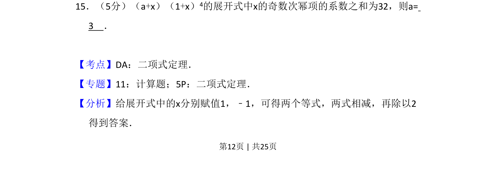
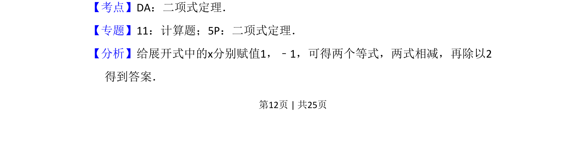
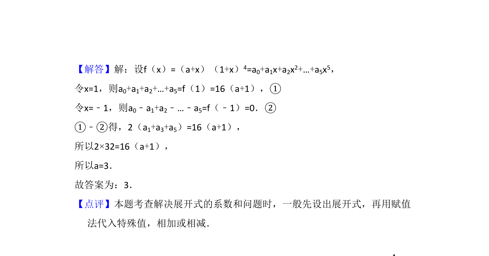

考点：二项式定理 赋值法 系数和

给定二项展开式，利用赋值法求奇次项系数和以确定参数值。


📄 原 PDF 第 12 页：
素材/真题/吉林/2008-2024·（吉林）数学高考真题/2015年高考数学试卷（理）（新课标Ⅱ）（解析卷）.pdf
15．（5分）（a+x）（1+x）4的展开式中x的奇数次幂项的系数之和为32，则a= 3 ．
【考点】DA：二项式定理．菁优网版权所有 【专题】11：计算题；5P：二项式定理． 【分析】给展开式中的x分别赋值1，﹣1，可得两个等式，两式相减，再除以2 得到答案．